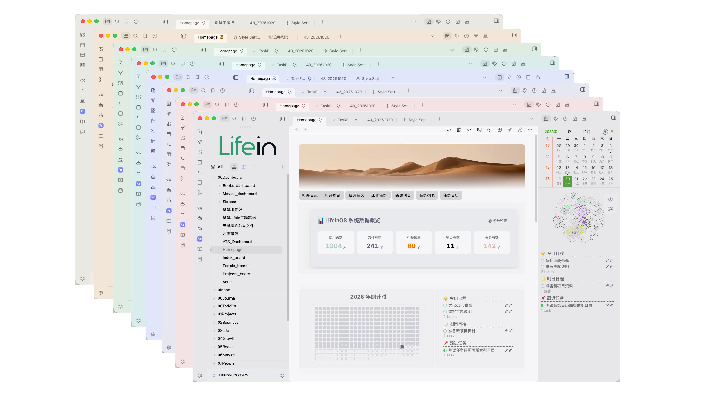
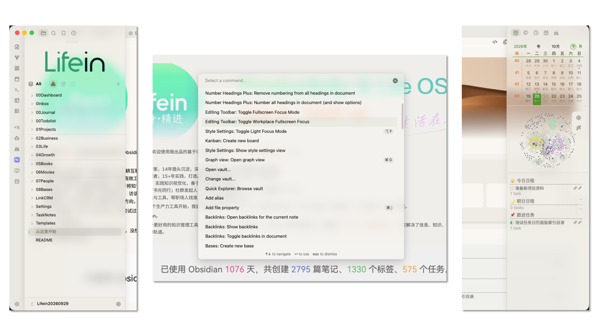
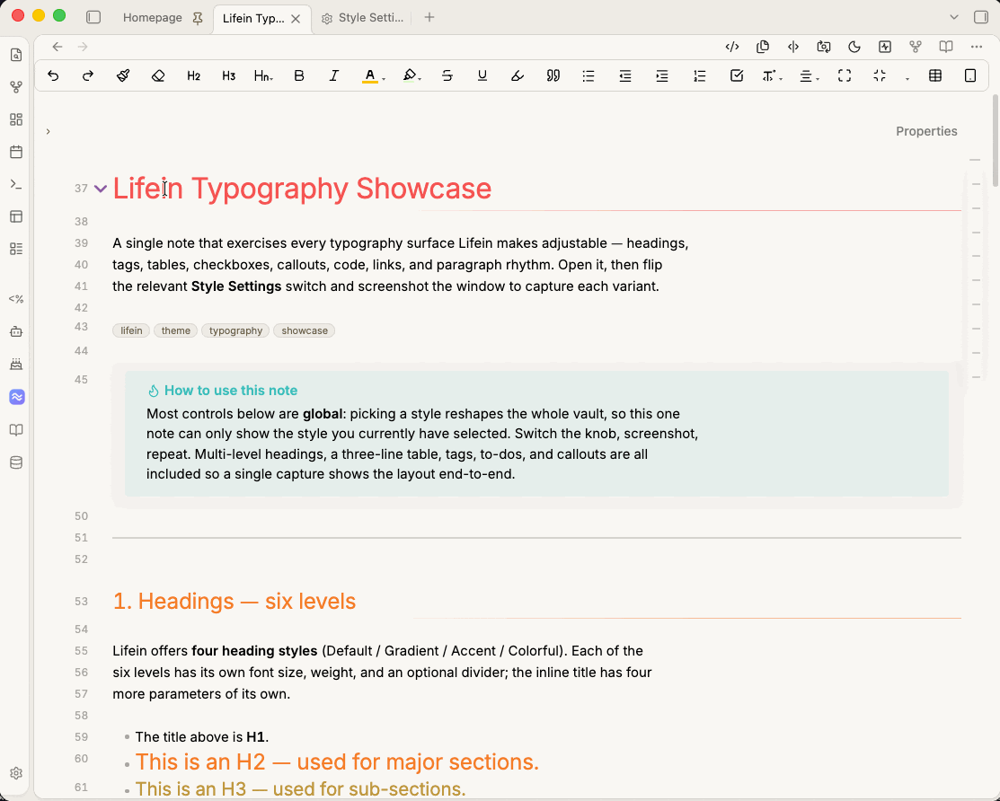
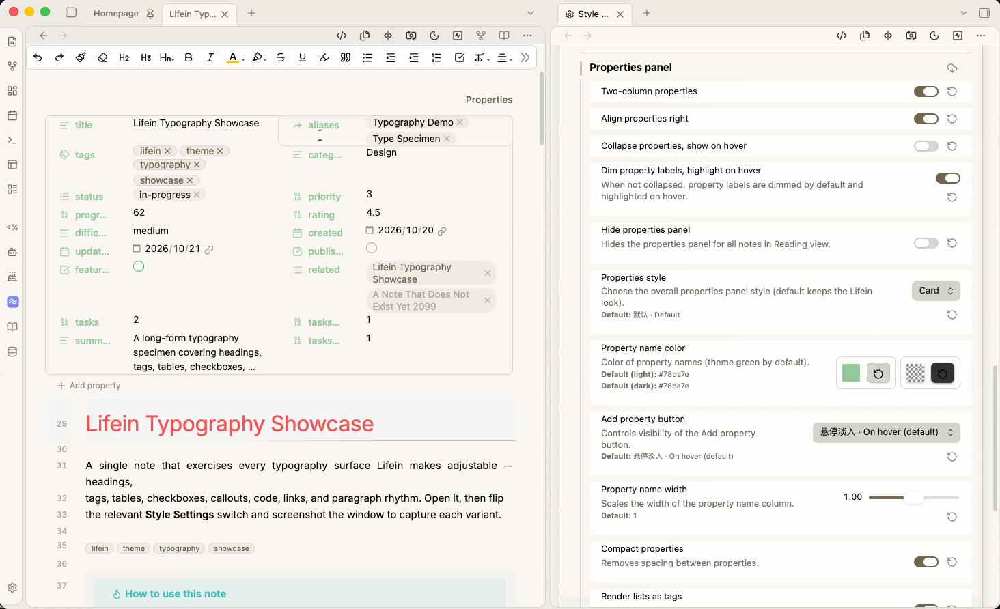
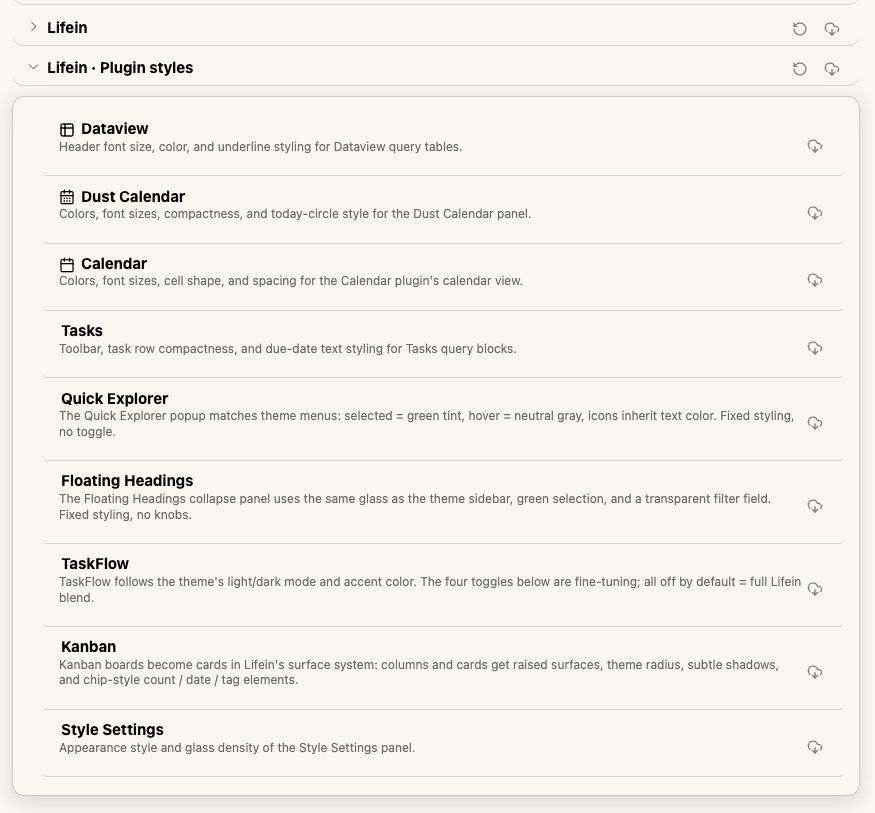

01
配色：选一个主色，整套自动配好
你只需要定一个强调色，主题会自己算出背景、文字、边框、标签、代码高亮的整套色阶，明暗两套各自成立。 不想配色也没关系，内置九套成品方案，亮色和暗色可以分别选。
- 一个颜色派生出整套界面——不是简单替换主色，而是按明暗与层级重新计算，保证对比度始终够用。
- 明暗分别选方案：白天用「素白」，晚上用「纯黑 AMOLED」，互不影响。
- 层级强度四档：扁平、标准、分明、强烈，决定侧栏、卡片、弹窗之间拉开多少明暗差。
- 阴影三档：标准、轻、无。嫌投影脏就调到「无」，界面立刻变平。
- 基准色四枚：绿、红、蓝、黄的实色各自可换，标签、勾选框、高亮都从这里取色。
- 背景亮度与文字对比度可微调，觉得刺眼或发灰都能自己找平。
- 整站圆角一个滑杆统一缩放，另有一个动效时长滑杆与「减少动效」开关。
九套成品方案 · 亮色与暗色各自可选
素白
暖砂
森野
青碧
靛蓝
墨玉
玫红
石墨
纯黑
跟随强调色

配色方案面板image/s2-schemes.png
建议截：Style Settings 里「配色方案」展开，能看到亮色/暗色两个下拉和九套方案名。
02
布局：四种整体形态，一键切换
同一套主题，可以是贴边紧凑的工作台，也可以是卡片分明的阅读空间。四种布局对应四种使用心情，切换不用改任何代码。
Default贴边 · 无间隙
最接近原生，信息密度最高，适合小屏。
Baseline贴边 · 8px 间隙
主区贴底，侧栏与正文之间留出细缝，稳且耐看。
Cards全部圆角卡片
侧栏与主区各自成卡，带阴影，状态栏悬浮。
Frame窗口内缩 + 描边
整窗内缩，每一块都加边框，像给界面装了个画框。
- 卡片模式九项细调：圆角、内边距、标题左距、描边浓度、阴影开关、间隙悬停收起、文件浏览器成卡、操作按钮成卡、侧栏图标加底色。
- 状态栏可整体隐藏，标题栏也能设成「悬停才显示」，把画面让给正文。
- 布局与配色互不干扰：先定形态，再换配色，两个下拉不打架。
04
玻璃质感：好看，但可以随时关掉
毛玻璃、半透明、背景模糊、色彩饱和增强，四个参数各自独立。喜欢通透就调透，不喜欢花哨，一个开关切回纯实色，立刻变成极简风。
- 三层透明度：面板、压暗层、浮层各一个滑杆，从全透明到接近实色都能找到舒服的那一档。
- 模糊强度 + 饱和增强：模糊决定「磨砂」程度，饱和增强让背后的颜色透出来时不发灰。
- 一键关闭：不喜欢玻璃，切成纯实色，所有面板恢复不透明，菜单透明度可单独留一档。
- 不挑机器：玻璃只作用于侧栏、弹窗与浮层，正文区始终不透明，长时间阅读不累眼。

玻璃质感特写image/s5-glass.png
建议截：侧栏或弹窗边缘的磨砂效果特写，背景有图或文字时最能体现。
05
排版：从标题到表格都管
写长文的人会在意这些：标题层级是否清楚、表格好不好看、标签会不会太吵。Lifein 把这些都做成了可调项。

排版综合示例image/s6-typography.gif
建议截：一篇同时含多级标题、三线表、标签、待办、引用块的笔记。
- 标题四种风格：默认、渐变、强调、多彩。六级标题的字号、字重、分割线可分别设定，页内标题另有四项参数。
- 标签四种形态：默认、纯文本、胶囊、圆角；字号、高度、边框宽度、文字色、背景、悬停背景六项可调，明暗两套色板独立。
- 表格三种样式：默认、无边框、三线表（学术论文那种）。支持斑马纹、悬停加深、表头字号与颜色、表头底色与描边。
- 复选框三种风格：Lifein、Border、Baseline；另有圆角、尺寸、颜色、边框色、标记色、删除线等八项通用参数。
- Callout 四种样式：默认、Pastel、Outlined、Sleek，描边透明度可调。
- 代码高亮三档：跟随主题、跟随配色方案、静默；代码块可切成纯文本模式（字号、行高、左右上下内边距各自可调）。
- 链接七项：下划线开关、内部/未解析/外部三类颜色、悬停跟随、编辑态显形、缩短显示。
- 段落五项：两端对齐、行高、编辑视图段距、正文段距、标题前距；另有引用块描边色、彩虹列表、进度条完成色。
06
细节：用久了才觉得舒服的地方
这些不是「一眼惊艳」的功能，而是每天点开都会碰到的地方。改一次，之后一直舒服。
- Banner 大图：笔记顶部放横幅，高度比例、圆角、底部渐变起点可调。
- Vault 图标：侧栏顶部换成自己的 logo，可固定显示，高度、间距、透明度可调。
- 标签页五种样式：Index 圆角/方形、Modern、方形、下划线；圆角与下划线粗细可调，新建标签页也能单独设成 Lifein 样式。
- 属性面板十二项：三种形态（默认/Block/Card），两列显示、靠右对齐、折叠、压暗、全局隐藏、键名配色、新增行三态、标签列宽、紧凑、属性值显示成标签、隐藏标题。
- Bases 数据库八项：隐藏表头图标、卡片标题两行、悬停显示删除、标题配色、行序号、斑马纹、悬停图片变清晰、超平滑滚动。
- 弹窗与交互：命令面板宽 1 项 + 配色 5 项、菜单玻璃透明度、页面预览框宽高缩放与底色。
- 专注模式：一键压暗非当前内容，标签页、标题栏、状态栏悬停才显形。
- 动效系统：全站动效时长一个滑杆，另有「减少动效」开关与「浅色专注」模式。

Banner + 属性面板image/s7-banner-properties.gif
建议截：带横幅的笔记，下方展开属性面板（两列 + 标签样式）。
07
插件不是「能用」，是「长得跟主题一样」
很多主题装完插件会出现「补丁感」——插件界面还是原生风格。Lifein 对常用插件做了深度适配，面板、按钮、颜色都跟主题统一。
Dataview6 项
Dust Calendar14 项
Calendar11 项
Tasks3 项
Quick Explorer弹出面板
Floating Headings固定样式
TaskFlow4 项
Kanban1 项
Style Settings2 项

插件界面合集image/s9-plugins.png
建议截：看板 + Dataview 表格 + 日历并排，展示插件与主题的视觉一致性。